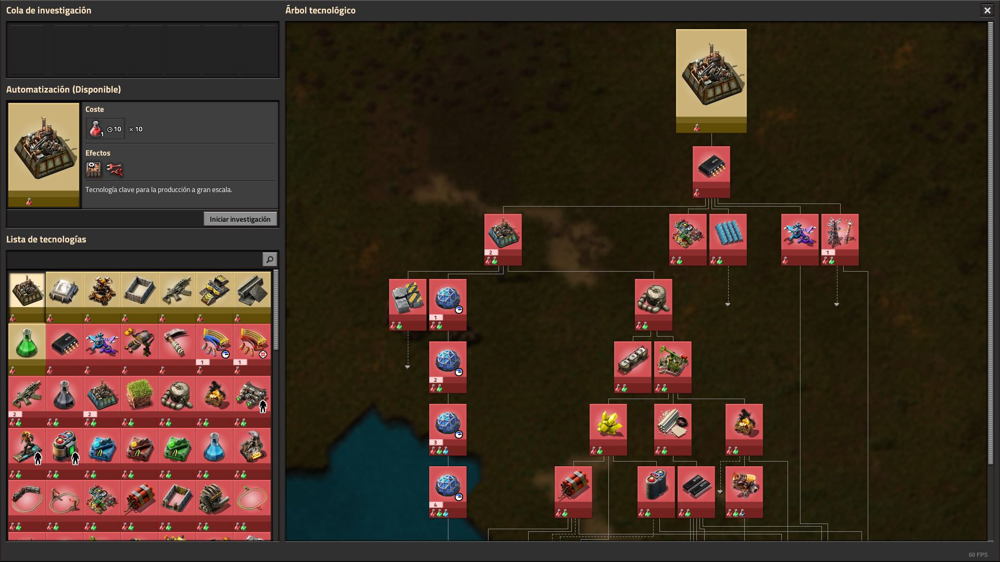

La investigación y progresión en Factorio son fundamentales para el desarrollo y la mejora de la fábrica. Los jugadores investigan nuevas tecnologías y mejoras, desbloqueando opciones avanzadas para automatizar procesos, mejorar la eficiencia y expandir la operación. A medida que progresan, enfrentan desafíos más complejos y avanzan hacia objetivos más ambiciosos, lo que garantiza una experiencia de juego dinámica y gratificante a largo plazo.
Inicio